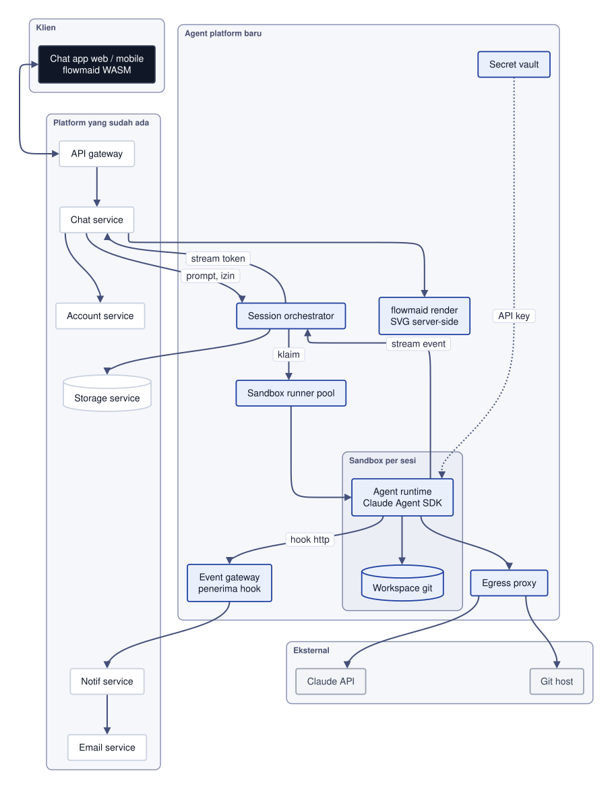
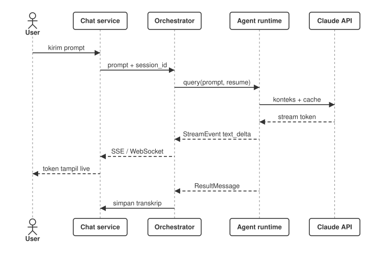
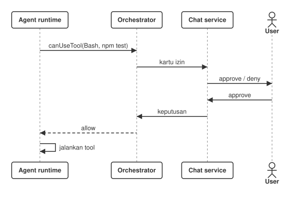
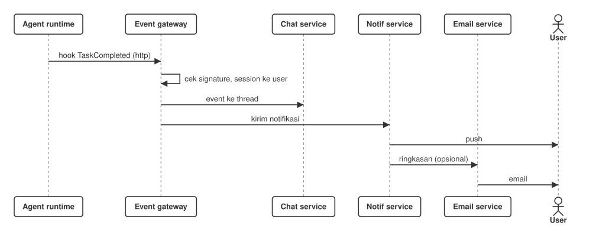
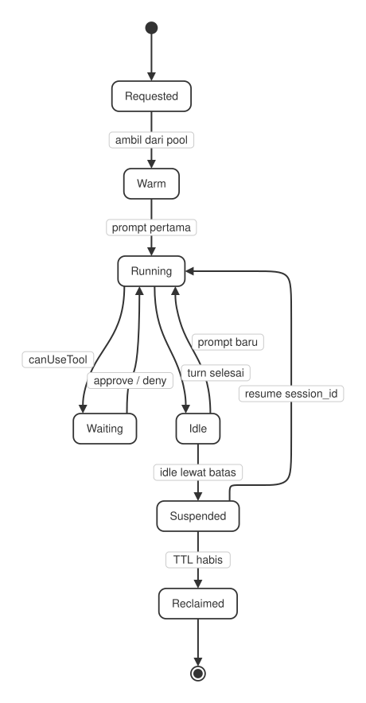
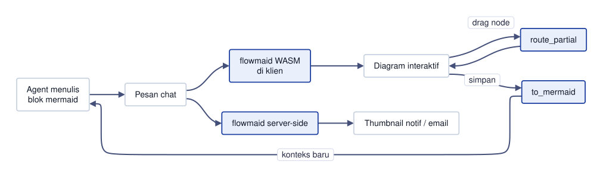

#![arian] cat ./rfc-001-vibe-coding-di-chat.md
architecture · rfc-001
Rancangan untuk menjalankan Claude Code di container milik sendiri dan menyambungkannya ke chat service yang sudah ada — dengan streaming jawaban, izin tool di chat, notifikasi tugas, sesi yang bisa dilanjutkan, dan diagram interaktif flowmaid.
http ke notif service.#![arian] cat ./01_ringkasan.md
Chat service yang sudah ada mendapat satu kemampuan baru: menerima perintah "vibe coding" dan menjalankannya lewat Claude Code di container kita sendiri. Pengguna mengetik di chat, agen bekerja di sandbox, jawaban dan progres mengalir balik ke thread yang sama.
claude dan toolchain build.http dari agen (selesai, butuh izin, error) dan meneruskannya ke notif service.| keputusan | pilihan | alasan |
|---|---|---|
| Runtime agen | Claude Agent SDK (TypeScript / Python) | Cara resmi meng-embed Claude Code: streaming, sesi, hook, izin, sub-agent. Untuk bahasa lain: claude -p stream-json. |
| Isolasi | Satu sandbox per sesi, warm pool | File, proses dan rahasia tiap pengguna terpisah; sandbox mati tidak menyeret sesi lain. |
| Event | Hook http → event gateway | Tanpa polling. Stop, TaskCompleted, Notification langsung sampai ke notif service. |
| Autentikasi | API key Claude Console / Bedrock / Vertex di vault | Wajib untuk produk yang melayani pengguna lain (Commercial Terms). Login Pro/Max tidak boleh dipakai. |
| State sesi | Event log + transkrip di storage service | Sesi bisa dilanjutkan di host lain (resume + SessionStore) setelah container diganti. |
| Diagram | flowmaid: WASM di klien, SVG di server | Zero dependency, deterministik, drag cepat, satu sumber geometri untuk layar dan ekspor. |
#![arian] cat ./02_konteks.md
Platform sudah punya layanan inti. Rancangan ini memakai ulang semuanya dan hanya menambah lapisan agen di belakang chat service. Tidak ada layanan lama yang diganti.
| layanan | status | peran dalam arsitektur ini |
|---|---|---|
| Account service | ada | Identitas pengguna dan tenant; kuota dan batas biaya agen per akun; kepemilikan API key (kunci platform atau milik pengguna). |
| Chat service | ada | Pintu masuk. Meneruskan prompt ke orchestrator, men-stream token ke klien, menampilkan kartu izin dan blok diagram flowmaid. |
| Notif service | ada | Menerima event dari event gateway — tugas selesai, butuh izin, gagal — lalu mengirim push dan in-app. |
| Email service | ada | Ringkasan tugas panjang dan laporan harian; thumbnail diagram dari flowmaid server-side. |
| Storage service | ada | Event log dan transkrip sesi, snapshot workspace, artefak dan lampiran yang dihasilkan agen. |
| dll. | ada | Billing / metering (biaya token per sesi), audit log, observability (OpenTelemetry). |
| komponen | status | tugas singkat |
|---|---|---|
| Session orchestrator | baru | API sesi, peta thread ↔ sesi ↔ sandbox, stream event, kuota. |
| Sandbox runner pool | baru | Container hangat, klaim per sesi, reclaim saat idle. |
| Agent runtime | baru | Claude Agent SDK di dalam sandbox; menulis ke workspace git. |
| Event gateway | baru | Penerima hook http; verifikasi, routing ke chat dan notif. |
| Secret vault | baru | API key Claude dan token git, disuntikkan saat sandbox diklaim. |
| Egress proxy | baru | Satu-satunya jalan keluar sandbox: allowlist, log, batas. |
| flowmaid render | baru | WASM di klien untuk diagram interaktif; SVG di server untuk notif dan email. |
#![arian] cat ./03_diagram-arsitektur.md

Sandbox per sesi hanya bisa keluar lewat egress proxy. Chat service tetap satu-satunya pintu ke klien.
#![arian] cat ./04_komponen-baru.md
POST /sessions, /sessions/{id}/messages, /interrupt, /permissions/{req}.claude, git, node, go, rust.ClaudeSDKClient / query() dengan include_partial_messages.resume: session_id; canUseTool meneruskan izin ke chat.settingSources: [], cwd per sesi, tanpa login OAuth.parent_tool_use_id.http: Stop, SubagentStop, TaskCompleted, Notification.PostToolUse masuk audit log.mermaid di pesan agen sebagai diagram interaktif.neutral / dark / forest.#![arian] cat ./05_alur-utama.md
Chat service meneruskan prompt beserta session_id. Orchestrator memanggil agen dengan resume, sehingga konteks percakapan lama ikut. Token mengalir balik sebagai StreamEvent dan ditampilkan langsung di thread. ResultMessage di akhir membawa biaya dan pemakaian token untuk metering.

Sebelum agen menjalankan perintah berisiko — Bash, menulis file di luar workspace, akses jaringan baru — SDK memanggil canUseTool. Orchestrator menahan giliran itu dan chat service menampilkan kartu approve / deny. Mode izin per tenant: default, acceptEdits, atau plan untuk review sebelum eksekusi.

Tugas panjang — build, test suite, sub-agent — tetap berjalan saat pengguna menutup aplikasi. Hook TaskCompleted atau Stop mengirim JSON event ke event gateway. Gateway mencocokkan sesi ke pengguna, menaruh event di thread chat, dan meminta notif service mengirim push. Email hanya untuk ringkasan, bukan untuk setiap event.

Sesi dan sandbox punya umur yang berbeda. Sandbox boleh mati — idle terlalu lama, node di-drain, crash — tanpa kehilangan percakapan.
resume: session_id lewat SessionStore.
#![arian] cat ./06_flowmaid-di-chat.md
Vibe coding banyak bicara lewat diagram: alur API, skema data, state machine, urutan deploy. Agen menulis blok mermaid; chat merendernya dengan flowmaid, dan pengguna bisa langsung menggeser node. Hasil edit dikirim balik sebagai teks mermaid, jadi agen membaca diagram yang sama dengan yang dilihat pengguna.

wasm32 tanpa runtime JS besar.scene, route_partial saat drag, hit_test untuk pick, to_mermaid untuk simpan.// klien (wasm): blok mermaid agen let g = parse(src)?; let scene = scene::scene(&g); // drag: hanya edge terdampak route_partial(&g, &scene, moved); let hit = scene.hit_test(x, y); // simpan: kembali ke agen let text = to_mermaid(&g); // server: SVG notif / email let svg = render_svg_advanced(src, &opts)?;
Nama fungsi sesuai README flowmaid; signature lengkap di dokumentasi crate.
#![arian] cat ./07_keamanan.md
http ke event gateway lewat jalur internal yang sama.canUseTool + mode izin per tenant; deny rules untuk perintah berbahaya (rm -rf /, akses metadata cloud).PreToolUse / PostToolUse dan setiap keputusan izin tercatat di audit log dengan session_id dan pengguna.#![arian] cat ./08_data-dan-penyimpanan.md
| data | disimpan di | catatan |
|---|---|---|
| Event log sesi | Storage service | Dari stream-json / SDK: pesan, tool call, hasil, biaya. Sumber kebenaran untuk tampilan chat dan resume. |
| Transkrip agen | Sandbox → storage | Dipulihkan lewat SessionStore saat resume di host lain. Format internal, jangan di-parse. |
| Workspace | Git host + snapshot | Commit per giliran atau per tugas; snapshot tar untuk resume cepat. |
| Artefak | Storage service | Build output, laporan, SVG diagram dari flowmaid. |
| Rahasia | Secret vault | Tidak pernah ditulis ke storage biasa. |
| Metering | Billing / account | Token dan biaya per ResultMessage, dijumlah per sesi dan tenant. |
#![arian] cat ./09_skala-dan-biaya.md
#![arian] cat ./10_rencana-bertahap.md
resume, kartu izin canUseTool, event log di storage service.http, event gateway, notif service, ringkasan email.to_mermaid, SVG server-side untuk notif dan email.#![arian] cat ./11_risiko.md
| risiko | mitigasi |
|---|---|
| Biaya token melonjak | Batas biaya per akun dan per sesi; peringatan di chat sebelum batas; model lebih ringan untuk tugas rutin. |
| Kode agen keluar sandbox | Runtime terisolasi, deny-all network, tanpa kredensial cloud di env, egress proxy. |
| Format internal berubah | Pakai SDK dan stream-json saja; pin versi SDK dan CLI di image; uji upgrade di staging. |
| Container mati di tengah tugas | Event log + snapshot workspace; resume otomatis di sandbox baru. |
| Kepatuhan lisensi | API key per tenant atau milik pengguna; tidak ada login consumer bersama. |
claude -p stream-json?#![arian] cat ./12_referensi.md
claude -p — code.claude.com/docs/en/headlesslangkah berikutnya
Satu container, satu thread chat, satu pengguna internal — lalu naik bertahap ke P4.